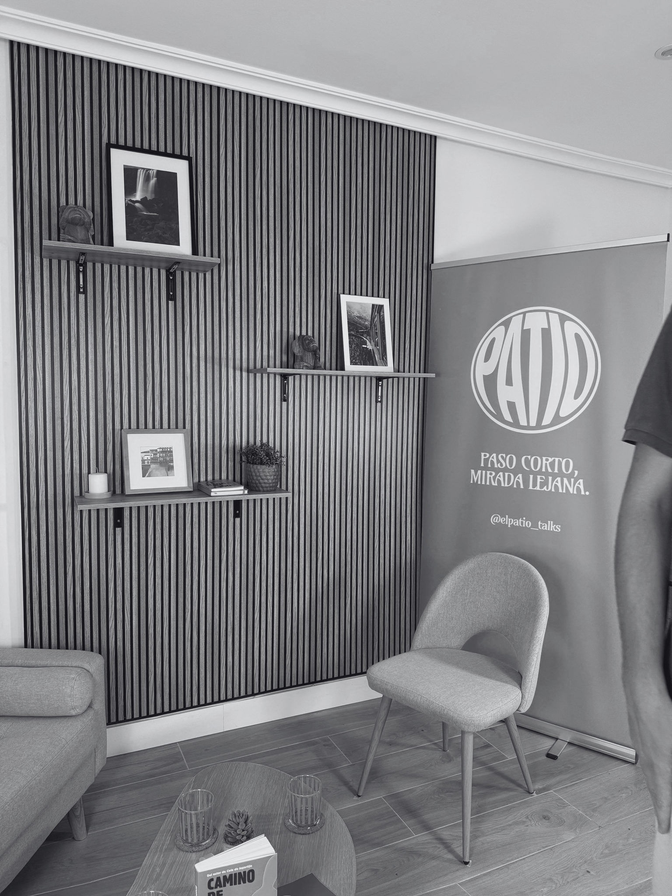

Patios presenciales

Delante de ti. Una historia, un público que pregunta sin miedo y después el afterpatio: música, comida y conversación.
Cada mes, en Córdoba.

Personas que han recorrido caminos difíciles, contando su historia delante de ti o alrededor de una mesa. Desde Córdoba.
Queremos que salgas con ganas de hacer más con ella: de conocer, arriesgar, construir, ayudar. De vivir con ambición y propósito.
Delante de ti. Una historia, un público que pregunta sin miedo y después el afterpatio: música, comida y conversación.
Cada mes, en Córdoba.

Alrededor de una mesa. Una conversación sin prisa sobre amistad, liderazgo, educación, superación, emprendimiento y testimonios de vida.
Cada dos jueves, en YouTube y Spotify.